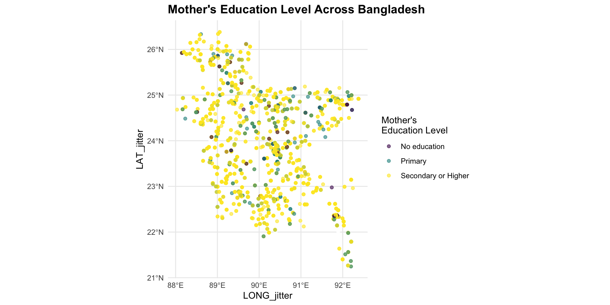
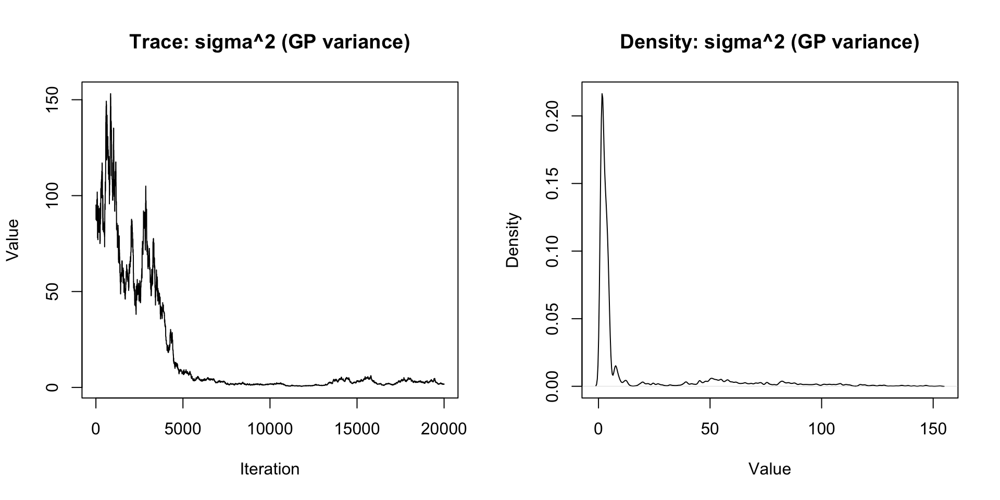
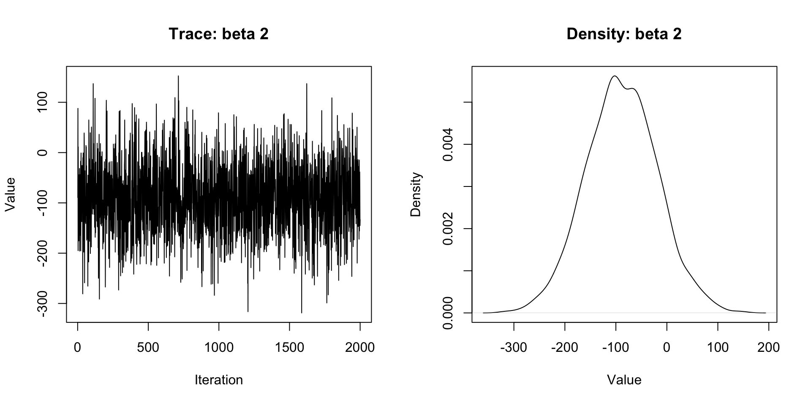
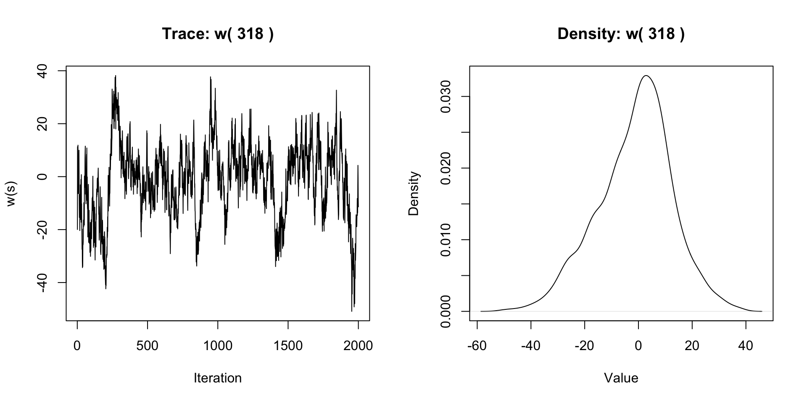

The Demographic Health Survey (DHS) is a national level survey conducted in many countries around the globe.
DHS collects and distributes a plethora of data on aspects of developing nations.
DHS
Our particular analysis will be conducted on the birth related survey from 2017-2018 in Bangladesh.
For this survey, households were sampled in particular clusters (villages or town centers) around the country.
If a mother was surveyed in a particular cluster location, they were asked if they had any children under the age of 5. If they did, then a particular question was about their children under the age of 5.
For this particular survey, 2383 observations (births) were recorded across Bangladesh.
Analysis of Covariates - Summary of Main Dataset and Cluster Metadata
The main dataset contains 29 covariates. One of these covariates is cluster_id, a unique numeric key identifying a site of measurement. Another dataset contains metadata pertaining to each individual cluster, detailing:
Geographic location (latitude, longitude)
ID for the DHS survey
Year of the survey
Coordinate reference system (CRS: WGS84)
Analysis of Covariates - Summary of Main Dataset and Cluster Metadata
Although none of the metadata fields will be used for analysis, we must join on cluster_id to recover geographic locations.
Household and Demographic Variables
Cluster ID from DHS data
Household number within the cluster
Rank of individual within household
Number of household members
Number of children under 5 in household
Gender of household head
Household and Demographic Variables
Urban or rural residence
Wealth index category
Survey weighting variable
Stratification variable for survey design
PSU identifier for survey design
Maternal Variables
Age of the mother
Education level of the mother
Occupation type
Mother’s height (cm)
Mother’s BMI
Marital status of the mother
Number of antenatal visits attended
Diagnosed with high blood pressure
Diagnosed with diabetes
Child Variables
Birth order of the child
Sex of child
Source of birth weight measurement
Birth weight in grams
Categorized birth weight
Date of birth
Household Infrastructure Variables
Type of drinking water source
Type of toilet facility
Availability of electricity
Floor material
Type of cooking fuel
Analysis of Covariates - Pairwise Correlation of Numeric Variables
Analysis of Covariates - Variance Inflation Factor
The study covers Bangladesh, with observations from 2,383 participants distributed across geographic coordinates (latitude and longitude).
Each participant’s location was masked by assigning them to a cluster centroid (via clusterid).
To create pseudo-unique locations, small i.i.d. Gaussian noise (SD = 0.001 degrees) was added to latitude/longitude.
Observations are spatially indexed using these randomized coordinates.
Spatial Dependence
Covariance decay with distance is a reasonable assumption due to spatial dependence of birth weight on environmental factors (e.g., local temperature).
Socioeconomic conditions that vary geographically.
Using distance-based covariance assumes that mothers in close proximity experience similar environmental influences affecting birth outcomes.
Empirical Variogram
Empirical Variogram
The empirical variogram for birth weight displays three key features:
A decrease in semivariance at very short distances (<20 km), likely reflecting the artificial noise added to cluster centroids. This “dip” represents reduced variability within clusters due to the imposed randomization, as participants from the same original cluster are now treated as spatially distinct but still share similar environmental conditions.
Empirical Variogram
An increasing trend between 20–80 km, indicating spatial dependence. Rising semivariance with distance suggests that birth weights become less similar as geographic separation increases, consistent with spatial autocorrelation.
A plateau beyond 80 km, implying the spatial correlation range (where covariance stabilizes) is reached.
Empirical Variogram
Overall, the spatial pattern aligns with the hypothesis that environmental factors like temperature—which vary regionally—may contribute to geographic disparities in birth weight. Further investigation into the covariance structure and model diagnostics would strengthen these conclusions.
Cluster Locations
Wealth Index
Wealth Index
The data shows both large-scale trends (visible in heat maps) and local variation Urban-rural differences create discontinuities in the spatial pattern River systems in Bangladesh might create natural boundaries/corridors for spatial correlation The jittering adds some noise to the spatial relationships but shouldn’t significantly affect large-scale patterns
Birth Weight
Maternal Education

Household Water Access
Residence Type and Birth Weight
Possible Research Questions
How do birth weights vary between urban and rural areas in Bangladesh? Is there a relationship between household wealth and birth weight outcomes? Do regions with better water access show improved birth weight outcomes? How does mother’s education level correlate with birth weight across different regions?
Possible Research Questions
Are there distinct regional clusters of high/low birth weights? Do coastal regions show different patterns compared to inland areas? Is there evidence of spillover effects from urban centers to surrounding rural areas? How do major river systems influence the spatial distribution of birth weights?
Possible Research Questions
How strongly does wealth index predict birth weight when controlling for spatial correlation? Is the relationship between mother’s education and birth weight consistent across regions? Do areas with better infrastructure (water access, healthcare facilities) show more consistent birth weights
References
National Institute of Population Research and Training (NIPORT), and ICF. (2020). Bangladesh Demographic and Health Survey 2017-18. Dhaka, Bangladesh, and Rockville, Maryland, USA: NIPORT and ICF.
The dataset birth_imp.RDS contains birth-related data. Another dataset, cluster_locations.csv, contains spatial information about clusters, including latitude (LATNUM) and longitude (LONGNUM). The column DHSCLUST is renamed to clusterid to maintain consistency across datasets, and only relevant columns are selected.
The two datasets are merged using left_join(), ensuring that birth-related records are matched with their corresponding cluster locations based on the clusterid field.
Standard Linear Regression
Call:
lm(formula = birth_weight ~ birth_weight_type + mother_bmi +
sex_of_child + mother_current_age, data = reg_data)
Residuals:
Min 1Q Median 3Q Max
-2342.4 -457.1 12.6 467.6 3239.3
Coefficients:
Estimate Std. Error t value Pr(>|t|)
(Intercept) 2653.29795 90.88762 29.193 < 2e-16 ***
birth_weight_typewritten card -89.92422 71.37700 -1.260 0.207848
mother_bmi 0.16857 0.03512 4.800 1.69e-06 ***
sex_of_childmale 106.70534 28.71063 3.717 0.000207 ***
mother_current_age -4.52190 2.74553 -1.647 0.099689 .
---
Signif. codes: 0 '***' 0.001 '**' 0.01 '*' 0.05 '.' 0.1 ' ' 1
Residual standard error: 698.4 on 2378 degrees of freedom
Multiple R-squared: 0.01605, Adjusted R-squared: 0.01439
F-statistic: 9.695 on 4 and 2378 DF, p-value: 8.905e-08
Standard Linear Regression
The linear regression model explains a small portion of the variance in birth weight, with a coefficient of determination of 0.016, indicating that the included predictors only account for about 1.6% of the variation. The low coefficient of determination suggests that additional factors, possibly spatial or environmental variables, may be influencing birth weight.
The intercept, 2653 grams, represents the estimated birth weight for a female child, with an unspecified birth weight type, and at average maternal BMI and age. Mother BMI has a significant positive effect on birth weight, 0.17 grams per unit increase, suggesting that higher BMI is associated with heavier newborns.
Male children weigh about 107 grams more than females on average. The effect of mother age is negative, 4.52 grams decrease per year, but not statistically significant at the 5% level, implying weak evidence for an age-related decline in birth weight.
The variable birth weight type (written card vs. mother recall) has an estimated difference of -90 grams but is not statistically significant, indicating no strong evidence that recorded birth weight type impacts the outcome.
Residual Visualization
Residual Visualization
This scatter plot visualizes the residuals from the linear regression model across spatial coordinates (LATNUM and LONGNUM). Each point represents a geographic location, and the color gradient indicates the magnitude of the residuals. Yellow/Green regions represent positive residuals, where the model underestimates birth weight. Blue/Purple regions represent negative residuals, where the model overestimates birth weight. Near-zero residuals (mid-range colors) indicate areas where the model’s predictions are more accurate. Base on this scatter plot, clusters of similar residual values (e.g., regions where residuals are predominantly positive or negative) suggest that there is a spatial correlation in the errors. This indicates that the linear model may not fully account for spatial dependencies in the data.
Empirical Variogram
Empirical Variogram
The empirical variogram of residuals reveals the spatial dependence structure of unexplained variation after fitting the linear model. The increasing trend in semivariance at short distances (within 50 kilometers) suggests positive spatial autocorrelation, indicating that residuals from nearby locations tend to be similar. The lack of a clear sill suggests that spatial dependence persists beyond the observed range or that non-stationarity may be present. Fluctuations in the variogram could be due to noise, uneven spatial sampling, or anisotropy in the spatial process.
The predictor variables are extracted into a matrix X, while the response variable birth_weight is stored in a separate matrix y. The number of predictors is assigned to p, and the total number of observations is stored in n.
Random noise is added to the coordinates of each cluster. This slight perturbation ensures that spatial locations are not exactly identical
Bayesian Regression
Intialize MCMC
n.samples <-2000# Number of MCMC iterationsstarting <-list("phi"=3/0.5, "sigma.sq"=50, "tau.sq"=1) # Inital Value for MCMCtuning <-list("phi"=0.1, "sigma.sq"=0.1, "tau.sq"=0.1) # Defining Tuning Parameters
The number of samples for the Markov Chain Monte Carlo (MCMC) process is set to 2000. This controls how many iterations the Bayesian inference process will perform to estimate spatial relationships. For initial values, the parameter phi controls the range of spatial correlation, sigma.sq represents the variance of the spatial process, and tau.sq captures small-scale variability or measurement noise. Tuning parameters determine the step sizes used in the MCMC algorithm. Proper tuning ensures efficient sampling and improves convergence.
Prior distributions are assigned to model parameters. The regression coefficients (beta.Norm) follow a normal distribution centered at zero with high variance. The spatial range parameter (phi) has a uniform prior. The variances (sigma.sq and tau.sq) follow inverse-gamma distributions, ensuring positive values while allowing flexibility.
The covariance structure is set to an exponential model, where spatial correlation decays exponentially with distance. This choice assumes that nearby locations are more strongly correlated than distant ones.
Iterations = 1:5000
Thinning interval = 1
Number of chains = 1
Sample size per chain = 5000
1. Empirical mean and standard deviation for each variable,
plus standard error of the mean:
Mean SD Naive SE Time-series SE
sigma.sq 7.543e+05 9.280e+04 1.312e+03 1.418e+04
tau.sq 6.797e-02 8.232e-02 1.164e-03 9.566e-03
phi 2.963e+01 1.539e+00 2.177e-02 2.414e-01
2. Quantiles for each variable:
2.5% 25% 50% 75% 97.5%
sigma.sq 7.113e+05 7.492e+05 7.652e+05 7.770e+05 8.156e+05
tau.sq 2.384e-02 3.920e-02 5.048e-02 6.893e-02 1.926e-01
phi 2.651e+01 2.978e+01 2.992e+01 2.995e+01 2.998e+01
Bayesian Regression
The posterior estimates from the spatial Bayesian linear model (spLM) indicate strong spatial dependence in birth weight variations. The posterior mean for the spatial variance (sigma.sq = 754,300) suggests that a significant portion of the variability is explained by spatial factors, with a relatively narrow credible interval ([711,300, 815,600]), confirming stability in the estimates. The nugget variance (tau.sq = 0.068), representing measurement error or unstructured variability, is relatively low, suggesting minimal noise in the observations. The range parameter (phi ≈ 29.63), with a tight 95% credible interval ([26.51, 29.98]), indicates a strong spatial correlation, meaning birth weights in locations within this range exhibit similar trends.
Bayesian Regression
MCMC Results - Trace Plot of Spatial Process Parameter - Φ
Bayesian Regression
MCMC Results - Trace Plot of Spatial Process Parameters - σ²
Bayesian Regression
MCMC Results - Trace Plot of Spatial Process Parameters - τ²
Bayesian Regression
Analysis of Trace Plots
The trace plots for key spatial process parameters (Φ, σ², τ²) flatten out after around 300 iterations. This indicates that the MCMC chain has likely converged to the posterior distribution after the initial burn-in period. The first 300 iterations are considered burn-in, and the subsequent iterations reflect the true posterior. Additionally, the chains exhibit no trends or systematic movements, suggesting effective exploration of the parameter space.
Bayesian Regression
MCMC Results - Autocorrelation of Spatial Process Parameter - Φ
Bayesian Regression
MCMC Results - Autocorrelation of Spatial Process Parameter - σ²
Bayesian Regression
MCMC Results - Autocorrelation of Spatial Process Parameter - τ²
Bayesian Regression
Analysis of Autocorrelation Plots
The autocorrelation plots for Φ and σ² show similar trends, with both parameters exhibiting a slow decay in autocorrelation, indicating moderate dependence between successive samples. This suggests reasonable mixing for these parameters. However, for τ², the autocorrelation decays to a lower value of 0.25, indicating slower mixing and stronger dependence between samples. This slower decay for τ² suggests the chain may be struggling to effectively explore the parameter space for this parameter, potentially due to strong correlations with other parameters or insufficient mixing.
Group Challenge 3
Jittering
Formal Jittering. We set for 0.03 as standard deviation.
Regression
We run a linear model with the 4 covariates for future initial parameters setting.
Call:
lm(formula = y ~ ., data = X_selected_df)
Residuals:
Min 1Q Median 3Q Max
-2342.4 -457.1 12.6 467.6 3239.3
Coefficients:
Estimate Std. Error t value Pr(>|t|)
(Intercept) 2563.37373 114.97376 22.295 < 2e-16 ***
birth_weight_type_recall 89.92422 71.37700 1.260 0.207848
mother_bmi 0.16857 0.03512 4.800 1.69e-06 ***
sex_of_child_male 106.70534 28.71063 3.717 0.000207 ***
mother_current_age -4.52190 2.74553 -1.647 0.099689 .
---
Signif. codes: 0 '***' 0.001 '**' 0.01 '*' 0.05 '.' 0.1 ' ' 1
Residual standard error: 698.4 on 2378 degrees of freedom
Multiple R-squared: 0.01605, Adjusted R-squared: 0.01439
F-statistic: 9.695 on 4 and 2378 DF, p-value: 8.905e-08
B₀: 89.924, B1: 0.169, B2: 106.705, B3: -4.522
MGP Trace and Density Plots for Regression Coefficients (β1)
MGP Trace and Density Plots for Regression Coefficients (β2)
MGP Trace and Density Plots for Regression Coefficients (β3)
MGP Trace and Density Plots for Regression Coefficients (β4)
MGP Trace and Density Plots for Hyperparameters (τ²)
MGP Trace and Density Plots for Hyperparameters (φ)
MGP Trace and Density Plots for Hyperparameters (σ²)

MGP Trace and Density Plots - Analysis
The convergence is reached after approximately 6,000 iterations, so we ran for 28,000 iterations and burn the first 8,000. We initialize the regression coefficients (\(\beta\)) from the linear regression with the covariates we are interested in.
Posterior Predictive Map
Empirical Spatial Variogram
Nonspatial Linear Regression
Call:
lm(formula = birth_weight ~ birth_weight_type + mother_bmi +
sex_of_child + mother_current_age, data = reg_data)
Residuals:
Min 1Q Median 3Q Max
-2342.4 -457.1 12.6 467.6 3239.3
Coefficients:
Estimate Std. Error t value Pr(>|t|)
(Intercept) 2653.29795 90.88762 29.193 < 2e-16 ***
birth_weight_typewritten card -89.92422 71.37700 -1.260 0.207848
mother_bmi 0.16857 0.03512 4.800 1.69e-06 ***
sex_of_childmale 106.70534 28.71063 3.717 0.000207 ***
mother_current_age -4.52190 2.74553 -1.647 0.099689 .
---
Signif. codes: 0 '***' 0.001 '**' 0.01 '*' 0.05 '.' 0.1 ' ' 1
Residual standard error: 698.4 on 2378 degrees of freedom
Multiple R-squared: 0.01605, Adjusted R-squared: 0.01439
F-statistic: 9.695 on 4 and 2378 DF, p-value: 8.905e-08
Spatial Nearest Neighbor Gaussian Process
----------------------------------------
Building the neighbor list
----------------------------------------
----------------------------------------
Building the neighbors of neighbors list
----------------------------------------
NNGP Trace and Density Plots for Regression Coefficients (β1)
NNGP Trace and Density Plots for Regression Coefficients (β2)

NNGP Trace and Density Plots for Regression Coefficients (β3)
NNGP Trace and Density Plots for Regression Coefficients (β4)
NNGP Trace and Density Plots for Regression Coefficients (β5)
NNGP Trace and Density Plots for Regression Coefficients (β) - Analysis
The trace plots for the \(\beta\) parameters illustrate that after an initial burn-in period the chains stabilize and fluctuate around a fixed mean, indicating good mixing and convergence. Corresponding density plots show smooth, unimodal distributions for each coefficient, which suggests that the posterior estimates for the fixed effects are reliable
NNGP Trace and Density Plots for Hyperparameters (φ)
NNGP Trace and Density Plots for Hyperparameters (σ²)
NNGP Trace and Density Plots for Hyperparameters (τ²)
NNGP Trace and Density Plots for Hyperparameters - Analysis
For the spatial decay parameter (φ) and variance components (σ² for the spatial process and τ² for the nugget), the trace plots demonstrate that the chains converge after a burn-in period. The density plots reveal that although φ exhibits some right skew (with a long tail), all hyperparameters exhibit unimodal posterior distributions. This indicates that the model has successfully explored the parameter space and reached a stable posterior distribution.
Trace and Density Plots for Selected Latent Spatial Effects (w(1131))
Trace and Density Plots for Selected Latent Spatial Effects (w(397))
Trace and Density Plots for Selected Latent Spatial Effects (w(318))

Trace and Density Plots for Selected Latent Spatial Effects (w(266))
Trace and Density Plots for Selected Latent Spatial Effects (w(1354))
Trace and Density Plots for Selected Latent Spatial Effects - Analysis
The trace plots for the latent spatial effect w(s) at selected locations show stable fluctuations over the MCMC iterations, with no evident trends or abrupt jumps, which confirms convergence. Their density plots, while showing some variability across locations, are generally smooth and unimodal. This implies that the spatial random effects are well‐estimated at the individual locations.
Posterior Predictive Map at Observed Locations
Posterior Predictive Map at Observed Locations
This map displays the posterior predictive distribution for the observed locations, derived from one selected draw (or the posterior mean) of the y_rep samples. The color scale represents the predicted birth weight values. The relatively uniform distribution of colors (without large-scale gradients) suggests that the NNGP model has effectively accounted for spatial variation in the observed response
Empirical Variogram of Posterior Predictive Values
Residuals Variogram of Posterior Predictive Values
Residuals Variogram of Posterior Predictive Values
The variogram of the model residuals displays a moderate increase at medium distances before leveling off. This pattern indicates that while most of the spatial dependence has been accounted for by the model, some minor spatial correlation remains among nearby observations. However, the overall level of semivariance does not continue to increase with distance, which supports the conclusion that the residual spatial autocorrelation is weak and likely due to random variability rather than a systematic bias. We see the sharp drop of semivariance when distance is greater than 200, this is due to the limited data at large distance.
Estimated Latent Process w(s)
Estimated Latent Process w(s)
The map clearly illustrates the spatial heterogeneity in the latent field, highlighting areas where the model detects higher or lower spatial effects. This visualization helps in interpreting the spatial structure that the NNGP model has captured beyond what is explained by the covariates.
Empirical Variogram of the Estimated Latent Process w(s)
Empirical Variogram of the Estimated Latent Process w(s)
The latent spatial process w(s) exhibits some small-scale variability near neighboring locations, causing the semivariance to be unexpectedly high at very short lags. As distance increases, the semivariance declines and fluctuates, indicating that the spatial correlation in w(s) is relatively short-ranged.